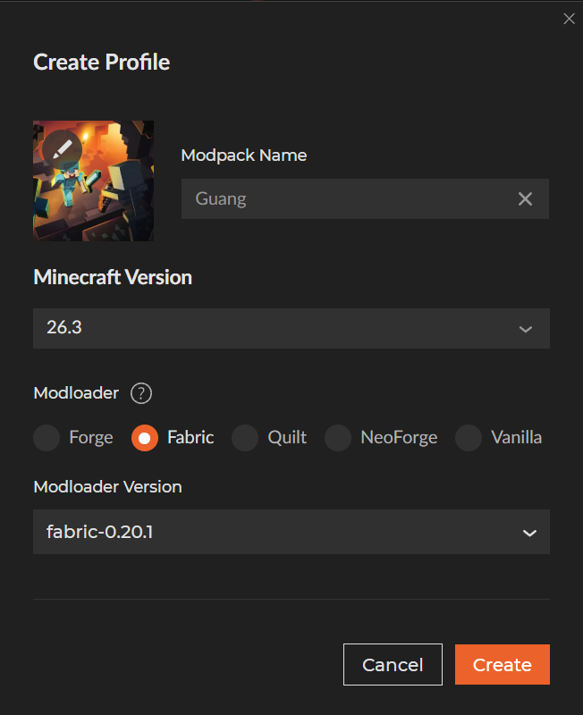
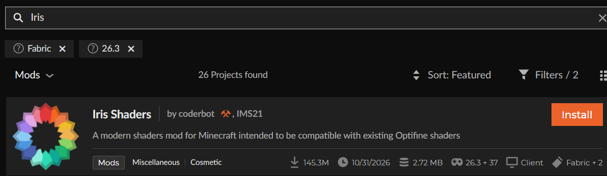
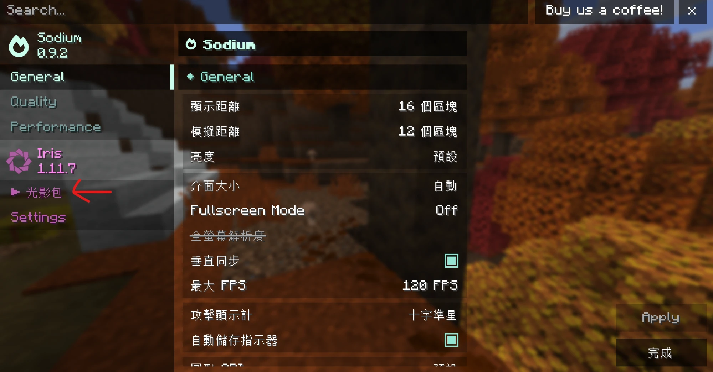
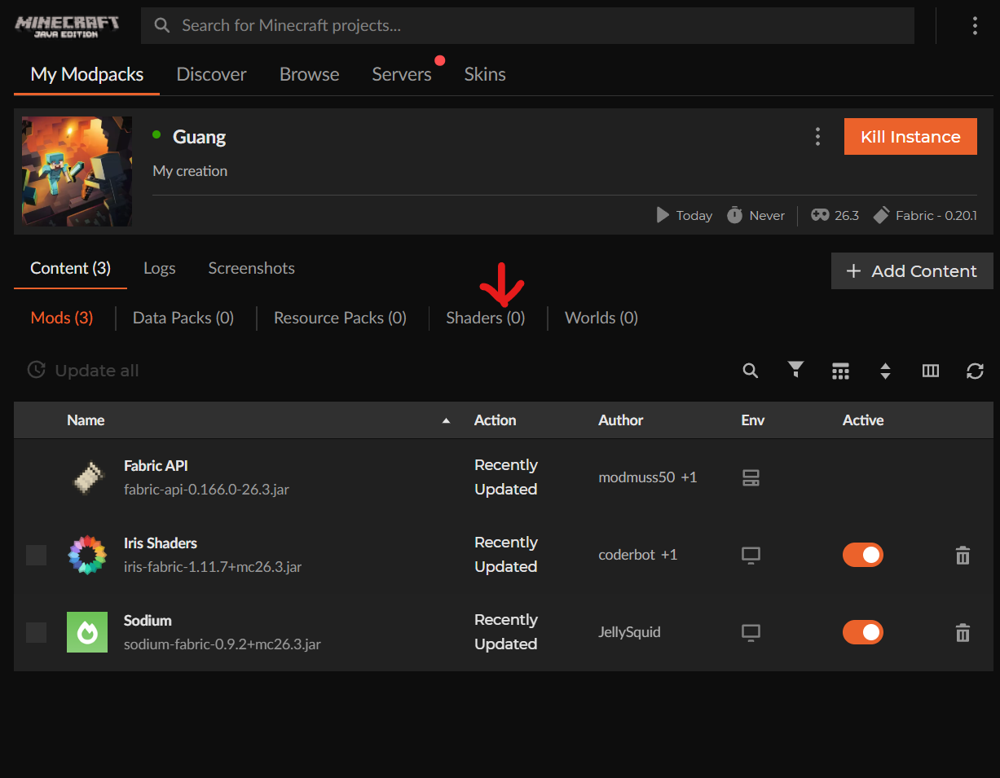
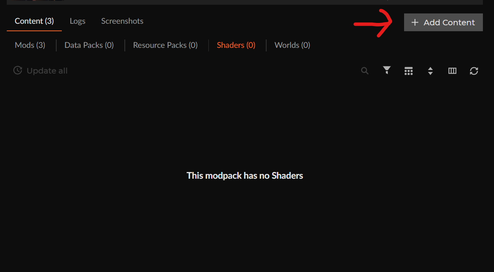
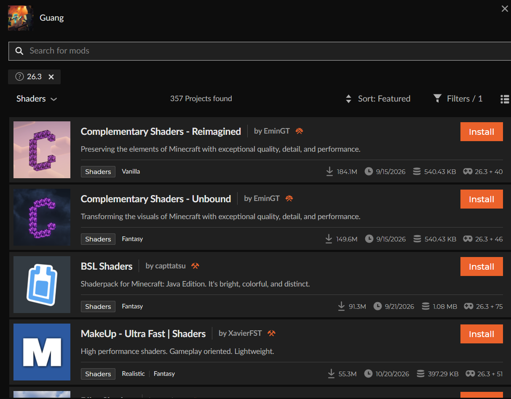
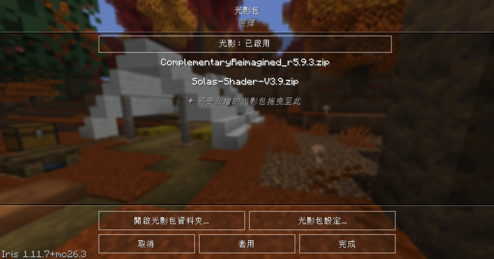

開始之前
你要先裝好 CurseForge，還不會的話先看 CurseForge 安裝教程。
建立遊戲包：Modloader 一定要選 Fabric
在 CurseForge 按 ＋ Create 建立新的遊戲包，打好名字。
⚠️ Modloader 一定要選 Fabric！選錯的話光影會裝不起來喔！
選好之後按 Create。

下載 Iris Shaders
在搜尋框打 Iris，
找到第一個 Iris Shaders，按橘色的 Install。
💡 Iris 是讓 Minecraft 可以用光影的工具，沒有它就不能裝光影喔！

進遊戲找到光影包選項
按 Play 進入遊戲，然後點 選項 → 顯示設定。
看紅色箭頭，左邊有一個 光影包，按下去。
💡 現在裡面還是空的，因為我們還沒下載光影包。下一步就來下載！

回到 CurseForge，選擇 Shaders
回到 CurseForge，點進你的遊戲包，
按紅色箭頭指的 Shaders。

按 Add Content
按右上角的 ＋ Add Content。

挑一個喜歡的光影包
這裡有很多光影包，選一個你想要的，
按橘色的 Install。
💡 電腦比較慢的話，可以選 MakeUp - Ultra Fast，比較不會卡。

回到遊戲，套用光影
回到遊戲的 光影包 畫面，會看到剛剛裝的光影包已經在裡面了！
點一下你要的光影，然後按 套用。

🎉 完成了！
按「完成」回到遊戲，看看世界是不是變漂亮了！
⬅️ 回到首頁